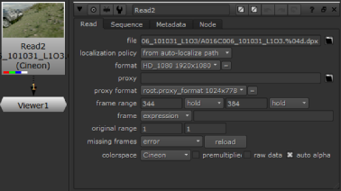

使用导入图像序列 Nuke 的文件浏览器:
| 1。 | 选择 图像 > 阅读 (或按 R 在 Nuke 节点图)。 |
提示: 按 R 选中现有读取节点后，将在该节点指定的位置打开文件浏览器。
| 2. | 浏览到要导入的图像序列。有关使用文件浏览器的说明，请参见 使用文件浏览器 。选择要打开的文件。如果你想同时打开几个文件, Ctrl / Cmd + 单击文件，然后单击 打开 . |
在节点图中插入一个读取节点。

Nuke 导入图像序列，并在读取节点上将其显示为缩略图。通常，读取节点不会以任何方式重新格式化或调整序列大小，并且节点的属性面板会更新以显示序列的本机分辨率和帧范围。请注意, 格式 和 代理格式 控件中的字段指示图像的格式，它们不会导致从文件中读取的图像被调整为此格式。
| 3. | 你就能通过现有版本的文件使用 Alt + 向上 / 下来 箭头键。如果您想跳到可用的最高版本，请按 Alt + 转变 + 向上 箭头键。 |
版本必须按照以下格式编写 Nuke 认识他们:
../我的文件/成绩/_____ V01 _ 001.r3d
../我的文件/成绩/_____ V02 _ 001.r3d
../我的文件/成绩/_____ V03 _ 001.r3d
| 4. | 如果您的序列有红色、绿色和蓝色通道，但没有 alpha 通道，请检查 自动阿尔法 读取节点控制面板中的框，将 alpha 通道设置为 1。如果 Nuke 尝试读取 alpha 通道，但不存在。的 自动阿尔法 默认情况下未选中该框。 |
注意: Nuke 从图像的本地格式读取图像，但读取节点使用线性颜色空间输出结果。如有必要，可以在读取节点的 “属性” 面板中更改 Colorspace 选项，或插入 颜色 > 色彩空间 节点来选择要输出或计算的颜色方案。
注意:
图像的最大大小
Nuke
观众可以显示 2 ^ 28 = 268,435,456 像素。这与 16 k x 16 k 、 32 k x 8 k 、 64 k x 4 k 或 128 k x 2 k 相同。如果你的图像比这个大，它会被调整大小，你会得到以下警告:
“观众图像被剪裁为 <size> x <size>!"
例如，如果您的图像分辨率为 60,000x4473,
Nuke
能够显示图像，因为像素的数量小于 2 ^ 28。但是，如果分辨率为 60,000x4474 (超过 2 ^ 28 像素)，图像将调整为 59998x4474。
除了查看器之外，此限制还应用于每个节点之间传递的图像的边界框。
| 5. |
如果您有图像序列的代理版本，请单击
代理
字段的文件夹图标
|
代理文件不需要匹配正在使用的代理解析。根据您的设置，完全分辨率或代理文件将缩放到所需的代理大小。有关更多信息，请参见 代理模式 .
| 6. | 您可以通过单击访问读取文件中包含的元数据 元数据 标签。一旦知道文件中存在哪些键，就可以在表达式中引用它们。请参阅 表情 欲了解更多信息。 |
显示的元数据取决于文件类型。例如，一个 。Jpg 可能只包含 输入/ 键，而 QuickTimes 包含 输入/ 和 Quicktime/ 钥匙。请参阅 使用文件元数据 欲了解更多信息。
要加载图像，还可以从外部文件浏览器 (如 Windows Explorer 或 Mac OS X Finder) 将图像拖放到节点图中。要以这种方式加载整个图像序列，请将包含图像的目录拖放到节点图中。
读取 QuickTime 时 。Mov 文件, Nuke 尝试通过从 QuickTime 头中读取元数据键/值对的扩展列表来选择 “最佳匹配” 组合，包括 nclc atom 、 gama atom 和 ProRes 编解码器头。您可以手动覆盖以下内容 Mov 选项 在 “读取节点属性” 面板中:
• 解码器 -设置用于读取文件的解码库:
• Mov32 -使用完整的 QuickTime 编解码器，但由于解码过程中的额外复杂性，处理速度可能会很慢。
• Mov64 -使用自己的打包和解包以及流解码/编码以获得额外的处理速度，但只支持一套 QuickTime 编解码器。
注意: Nuke 默认为最快 解码器 对于文件中使用的编解码器-如果您正在读取由 Mov64 子集, Nuke 默认为该阅读器。否则，回退 Mov32 使用阅读器。
• Ycbcr 矩阵 -只有在使用基于 y 'cbcr 的像素类型时才启用此功能。 Rec 601 和 Rec 709 遵循 ITU.BC 规范，whilst Nuke 遗产 , Nuke 遗产 Mpeg ,和 Nuke Legacy yuv 保留为向后兼容性。
注意: 默认选项, 基于格式的 ,选择 Rec 601 或 Rec 709 根据格式大小自动设置。
将解码器设置为 mov32 时，将显示两个附加控件:
• 编解码器 -设置用于读取 QuickTime 文件的编解码器。Codec 下拉列表默认为适合相关 QuickTime 的 codec (如果可用)，并且只列出那些声明自己能够读取文件的编解码器。
注意: 如果你使用的是狂热的 DNxHD 编解码器, Avid AVDn ,避免设置 像素格式 控制至 R408 由于编解码器中存在一个已知问题，导致帧随着序列中的每个帧进展而变暗。
• 像素格式 -设置读取像素格式，包括颜色空间、位深度、布局和范围。此设置默认为编解码器接受的最佳格式，允许 Nuke 在不使用未知 QuickTime 变换的情况下，尽可能执行到 RGB 的转换。在处理非 RGB 编解码器时，RGB 像素类型依靠 QuickTime 从 y 'cbcr 进行转换。
注意:
读取 QuickTime 文件时,
Nuke
按以下顺序查找元数据，并使用它来管理读取节点上的设置，当上述级别不可用时下降到每个级别，或者设置为保留或未知值:
1.代工专用用户数据
2。prores 头
3.nclc 原子
4.gama 原子
5.基于编解码器类型的默认值
QuickTime 。Mov 文件可能在 Nuke 相对于苹果的 Final Cut Pro，因为 Final Cut Pro 基于对文件内容和观看环境的假设引入了伽马补偿。
限制后台进程的数量 Nuke 读取 QuickTime 文件时可以运行，请转到 偏好 并设置的数字 要使用的 QuickTime 解码器 在 性能 > 线程/进程 标签。
。Avi 默认情况下或仅通过 Nuke 它是基于 FFmpeg 开源库的阅读器。如果使用时出现错误 。Avi 读取节点中的文件，您可能需要使用前缀 Mov64: 例如，在文件路径和文件名之前, Mov64: \ z: \ job \ FILM \ IMG \ final_comp_v01。#。avi .
Nuke 支持多部分 OpenEXR 2.2 图像，它允许您将通道、层和视图存储在文件的单独部分中，以加快处理速度。您可以以与单部分 OpenEXR 文件完全相同的方式加载多部分 OpenEXR 文件。
OpenEXR 文件格式允许显示窗口在任何位置都有左下角。不幸的是 Nuke 需要所有格式的左下角坐标为 0,0。在读取节点控制面板中，在 ExrOptions ,你可以检查 偏移负显示窗口 盒子告诉 Nuke 偏移图像，使显示窗口左侧 x 坐标为 0。如果你取消选中该框, Nuke 将格式从两侧缩小到 x 坐标中的负值，换句话说，将该区域视为过扫描。
默认情况下, Exr 前缀附加到元数据键，以使它们不同于树中的其他元数据。如果您希望在 “原样” 中读取元数据而不附加前缀，请启用 不附加前缀 .
在阅读时 。Exr 文件，你可以确定像素边缘的数据窗口，或边界框在 Nuke 方面，都采用了 边缘像素 下拉列表:
• 板检测 -如果边界框和格式完全匹配，则重复所有边。否则，在边缘添加黑色。
• 边缘检测 -对于每个匹配边缘，重复边缘像素。在不匹配的边缘添加黑色。
• 重复 -始终重复边界框外的边缘像素。
• 黑色 -始终在边界框外添加黑色像素。
在 Linux 上, Nuke OpenEXR 阅读器使用内存映射功能来提高读取 PIZ 压缩的性能 。Exr 文件。然而，一些客户在阅读大 (框架尺寸和通道数量) PIZ-compressed 时会经历悬挂 。Exr 跨 NFS 网络的文件。如果你遇到这个问题，你可以告诉 Nuke 不通过启用此选项来使用 mmap 函数。您可以根据具体情况设置它，或者在您的 Init.py 总是禁用它。有关 knobDefault 的更多信息，请参见 Nuke Python 文档 ( 帮助 > 文档 )。
加载分层时 。Psd 文件，一个名为 突破层 出现在 Psd 选项 在读取节点控制面板中。点击这个 “打破” 。Psd 使用一些 Shuffle 节点文件到单独的层中，并将这些层与许多 PSDMerge 节点重新组合。为了清晰起见，每个层都使用背景节点进行分组和标记。此外，在 Shuffle 和 PSDMerge 节点之间插入一个裁剪节点，允许您单独调整每个层的边界框。
PSDMerge 节点是此功能独有的一种合并节点。在控制面板中，有一个 操作 下拉菜单，a 面具 字段 (带有 反转 复选框) 和 a 混合 滑块。如果在 Photoshop 中设置了层的混合模式®, Nuke 自动设置这个的 操作 下拉列表。
注意: PSDmerge 中的混合模式是近似的，与 Photoshop 不匹配®完全正确。
|
|